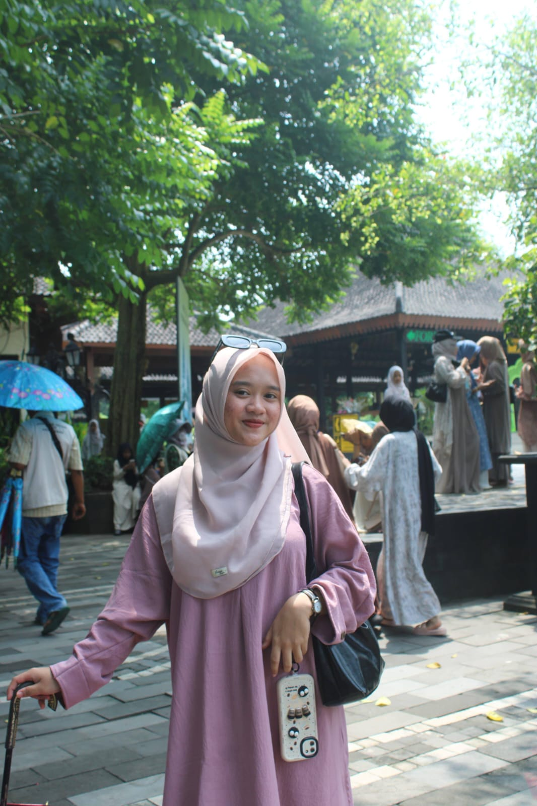

Hi, I'm Truc Dang – a mid-level graphic designer who values clarity, emotion, and purpose in every design. I enjoy building visual identities, packaging, and social content that help brands express who they truly are. I'm curious, detail-oriented, and always open to learning new things to grow both creatively and professionally.
I am involved in projects with clients such as G Kitchen, LoF, S2, and Asiafoods,...
Dr. Win Joint Stock Company (A Member of MASAN Group)
GREENFEED FOOD
FlameTech Digital